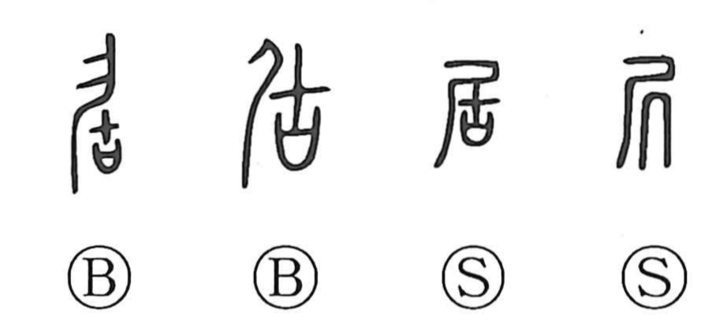

Explanation
Shirakawa traces the character back to an earlier form written 尻, composed of 尸 and 几. The top element, 尸, is a sacred katashiro—an effigy revered as a stand‑in for an ancestor’s spirit—while 几 depicts a low stool or bench. Together they show the ritual substitute seated, evoking a crouching or squatting posture. The later graph 居 is a phono‑semantic development of that form, with 古 serving as the phonetic that yields the On reading ko. Essentially the same character as 尻, 居 became the one in regular use. In early usage it expressed “to crouch/squat” and the state of being in attendance, as in phrases for being in mourning; from this core sense of remaining in place it broadened to “to be, to stay” and, in everyday language, to the idea of living or dwelling in a place.